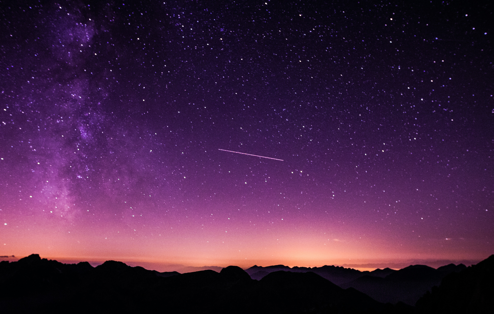
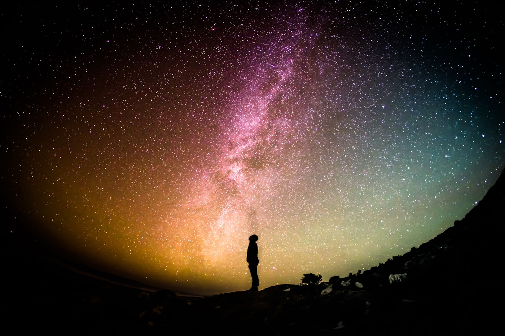
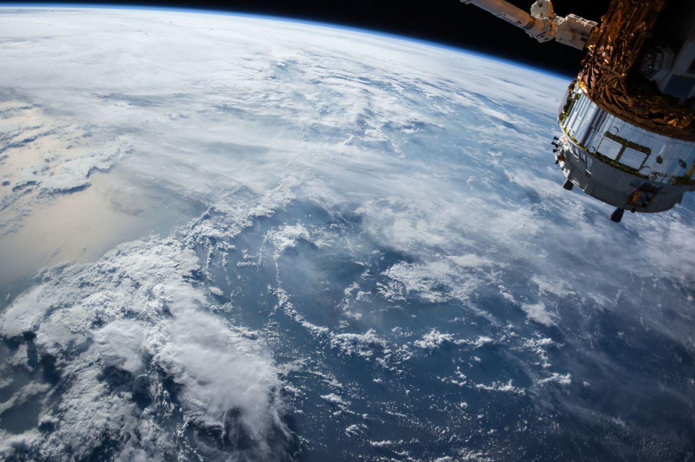

Abre el archivo para explorar las señales que dejaron las grandes eras del universo.
01 / 04
HACE 13.800 MILLONES DE AÑOS
El Big Bang
Todo el espacio, el tiempo, la materia y la energía del universo observable estaban comprimidos en un estado de densidad y temperatura extremas. En una fracción de segundo, una expansión vertiginosa —la inflación cósmica— estiró el cosmos billones de veces y sembró las diminutas variaciones de densidad que, eones más tarde, darían forma a galaxias enteras.

02 / 04
CIENTOS DE MILLONES DE AÑOS DESPUÉS
Primeras galaxias
Cuando la gravedad venció a la expansión en las regiones más densas de gas primordial, se encendieron las primeras estrellas: gigantes, calientes y de vida breve. Su luz ultravioleta desencadenó la reionización, disolviendo la niebla de hidrógeno neutro y permitiendo que la luz viajara libremente. Así nacieron las primeras galaxias y el universo dejó de ser oscuro.
03 / 04
HACE MÁS DE 13.000 MILLONES DE AÑOS
La Vía Láctea
Halos de materia oscura y nubes de gas primordial se fusionaron en sucesivas colisiones, dando forma poco a poco a nuestra galaxia. Con el tiempo se organizó en un disco de brazos espirales, un bulbo central denso y un halo esférico de estrellas antiguas que aún orbitan sus confines. Hoy alberga cientos de miles de millones de soles y un agujero negro supermasivo en su núcleo.


04 / 04
HACE 4.600 MILLONES DE AÑOS
Nace nuestro sistema
Una onda expansiva, quizá de una supernova cercana, comprimió una nube molecular en uno de los brazos espirales de la Vía Láctea. El colapso gravitacional encendió una protoestrella en su centro mientras el material restante se aplanaba en un disco giratorio, donde el polvo se fue aglutinando hasta formar planetesimales y, con el tiempo, los planetas, incluida la Tierra.
BASE DE DATOS // SISTEMAS CONOCIDOS
El mapa estelar.
Explora los cuerpos celestes de nuestro sistema planetario en 360°. Selecciona cualquier planeta para desplegar sus datos orbitales, composición atmosférica y fichas de exploración espacial en tiempo real.
21 OBJETOS DISPONIBLES
LABORATORIO DE A BORDO // FISIOLOGÍA ESPACIAL
Calculadora biométrica y fisiología espacial.
Ingresa tu peso y edad terrestres para simular el impacto de la gravedad sobre tu cuerpo en otros mundos. Descubre tu capacidad de salto, masa relativa y los requerimientos biológicos para sobrevivir en entornos extremos.
GRAVEDAD RELATIVA0.00 G
RIESGO
SIMULADOR BIOMÉTRICO Y FISIOLÓGICO
ATLETISMO Y GRAVEDAD
0,00 mALTURA DE SALTO ESTIMADA
CALCULADORA DE EDAD PLANETARIADIAGNÓSTICO DEL TRAJE ESPACIAL
RASTREADOR DE SATÉLITES // COBERTURA ORBITAL TERRESTRE
Radar de tráfico orbital.
Monitorea en tiempo real los satélites más importantes que orbitan la Tierra. Pasa el cursor sobre cualquier nodo orbital para fijar su trayectoria o haz clic para acceder a la telemetría oficial y misiones activas.
COMPARADOR DE ESCALA CÓSMICA // DE LUNAS A GALAXIAS
Escalas del cosmos.
Toma la Tierra como punto de partida y desplázate a través de cifras descomunales. Experimenta cómo la escala, la masa y la gravedad hacen temblar el tejido del espacio-tiempo a medida que te aproximas al Universo Observable.
22 OBJETOS EN PROGRESIÓN
ACCESO CONCEDIDO
1x
Punto de referencia: 1 vez el tamaño de la Tierra.
Objeto 01 de 22
CLASIFICACIÓN
NOMBRE
DIÁMETRO
NIVEL DE MAGNITUD
DATO COMPARATIVO
CATÁLOGO DE AMENAZAS ESPACIALES // ZONAS DE EVACUACIÓN
Zona de riesgo cósmico.
Expedientes clasificados de las 12 amenazas más peligrosas del espacio profundo, con su nivel de riesgo, distancia mínima de seguridad y protocolo de evacuación para la tripulación.
12 AMENAZAS CATALOGADAS
SIMULADOR NARRATIVO // MISIÓN DE RESCATE TEMPORAL
Falla temporal.
Un accidente en el simulador lanza al Viajero a través de 13.800 millones de años. Recorre las 4 eras del cosmos, escanea sus anomalías y repara el dispositivo de salto temporal para volver a casa.